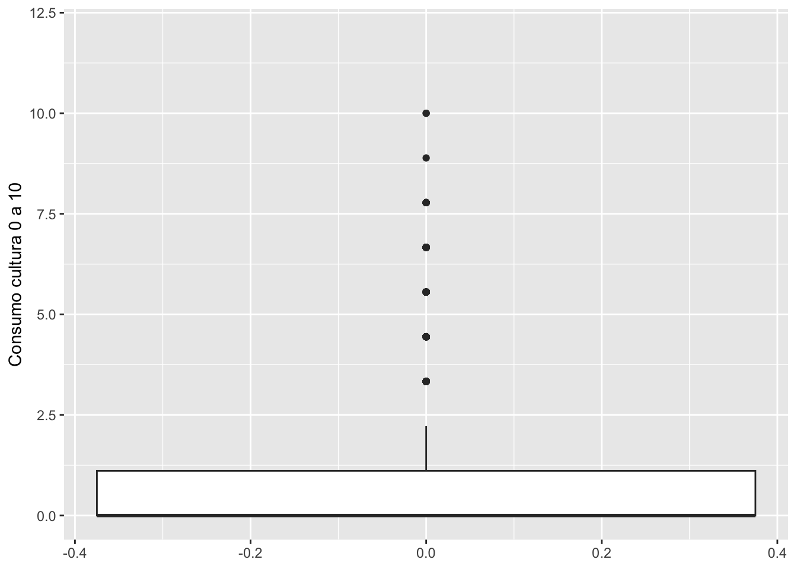
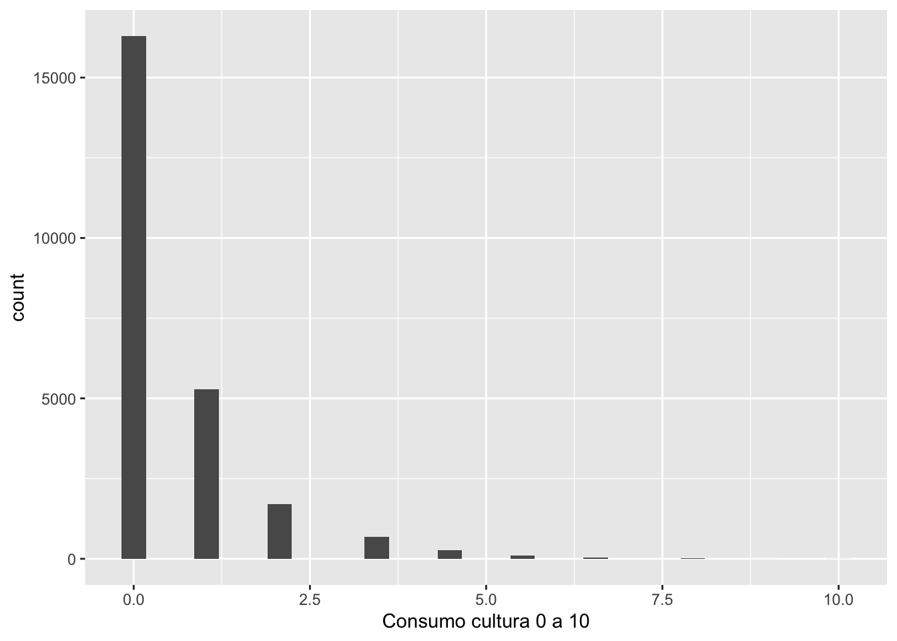
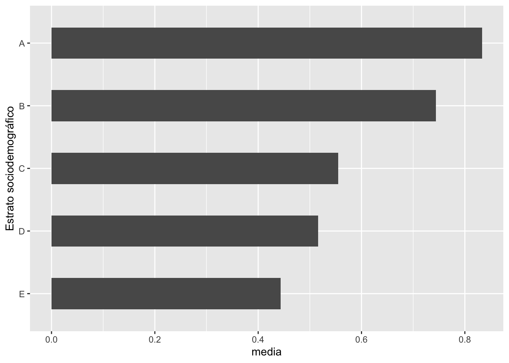
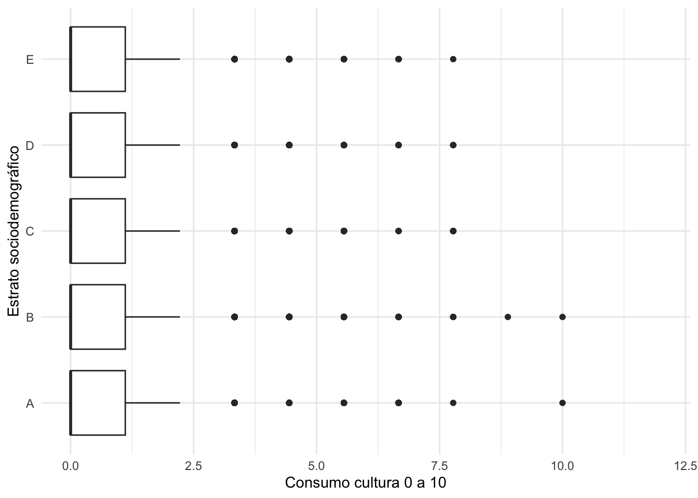
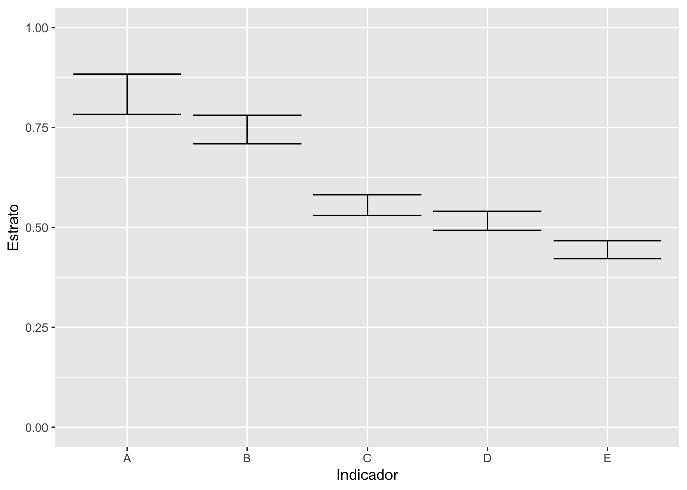
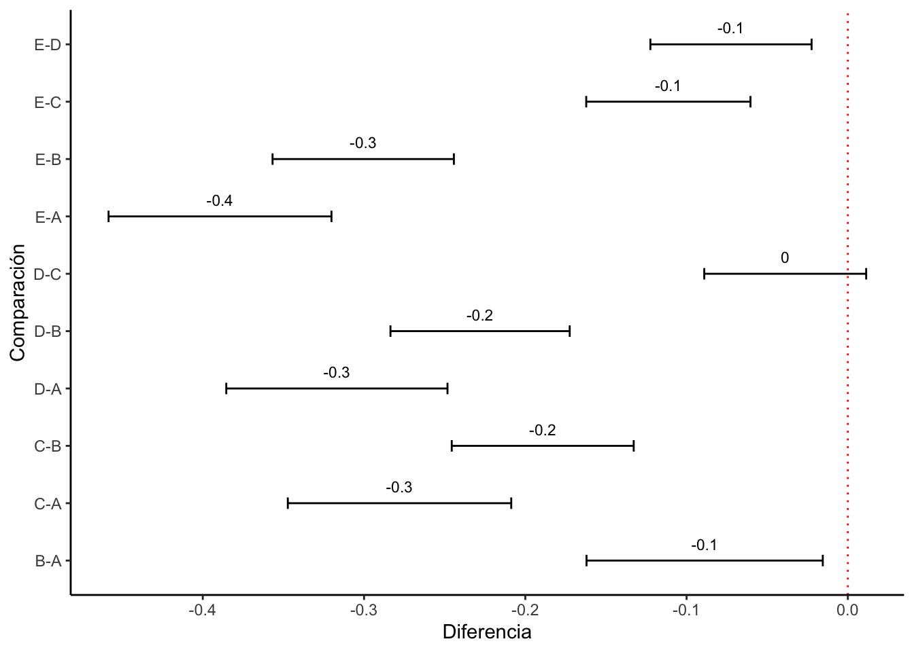
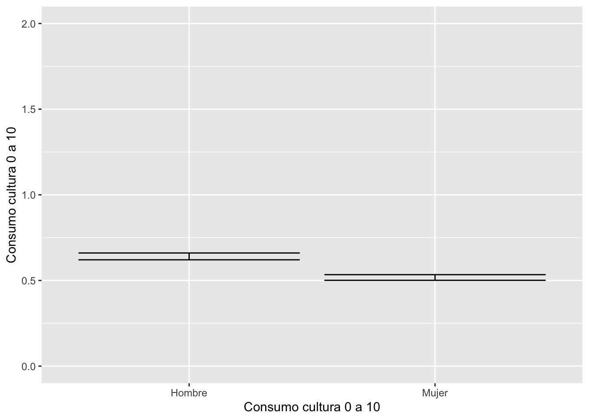

Práctica dirigida 7

FACULTAD DE CIENCIAS SOCIALES - PUCP
Curso: POL 278 - Estadística para el análisis político 1 | Semestre
2023 - 1
Ejercicios:
Utilizamos la base de datos de la Encuesta Nacional de Programas Presupuestales (ENAPRES) 2021. Descargala en: https://www.datosabiertos.gob.pe/dataset/encuesta-nacional-de-programas-presupuestales-enapres-2021-instituto-nacional-de-estad%C3%ADstica
El cuestionario, base de datos, diccionario de variables se encuentran en la carpeta de la práctica dirigida.
Para todas las preguntas utilice un gráfico para evidenciar su respuesta y redacte un párrafo donde exprese su respuesta.
Abrimos la base de datos
Usamos el paquete rio para importar la base de datos.
library(rio)
data=import("CAP_800A_URBANO_RURAL_10.csv")Usamos el comando names para reconocer los nombres de las variables
names(data)## [1] "MES" "PER" "CONGLOMERADO"
## [4] "VIVIENDA" "HOGAR" "ANIO"
## [7] "NSELV" "TSELV" "VIVREM"
## [10] "NUMVIVREM" "AREA" "CCDD"
## [13] "NOMBREDD" "CCPP" "NOMBREPP"
## [16] "CCDI" "NOMBREDI" "TOT_HOGAR"
## [19] "RESFIN" "P800A_A" "P800A_C"
## [22] "P800A_1_1" "P800A_1_3A_1" "P800A_1_3A_2"
## [25] "P800A_1_3A_3" "P800A_1_3A_4" "P800A_1_3A_5"
## [28] "P800A_1_3A_6" "P800A_1_3A_O" "P800A_1_6B"
## [31] "P800A_1_6C" "P800A_1_6D" "P800A_1_6E_1"
## [34] "P800A_1_6E_2" "P800A_1_6E_3" "P800A_1_6E_4"
## [37] "P800A_1_6E_5" "P800A_1_6E_6" "P800A_1_6E_7"
## [40] "P800A_1_6E_8" "P800A_1_6E_9" "P800A_1_6E_9_O"
## [43] "P800A_1_7" "P800A_1_7_O" "P800A_2_1"
## [46] "P800A_2_3A_1" "P800A_2_3A_2" "P800A_2_3A_3"
## [49] "P800A_2_3A_4" "P800A_2_3A_5" "P800A_2_3A_6"
## [52] "P800A_2_3A_O" "P800A_2_6B" "P800A_2_6C"
## [55] "P800A_2_6D" "P800A_2_6E_1" "P800A_2_6E_2"
## [58] "P800A_2_6E_3" "P800A_2_6E_4" "P800A_2_6E_5"
## [61] "P800A_2_6E_6" "P800A_2_6E_7" "P800A_2_6E_8"
## [64] "P800A_2_6E_9" "P800A_2_6E_9_O" "P800A_2_7"
## [67] "P800A_2_7_O" "P800A_3_1" "P800A_3_3A_1"
## [70] "P800A_3_3A_2" "P800A_3_3A_3" "P800A_3_3A_4"
## [73] "P800A_3_3A_5" "P800A_3_3A_6" "P800A_3_3A_O"
## [76] "P800A_3_6B" "P800A_3_6C" "P800A_3_6D"
## [79] "P800A_3_6E_1" "P800A_3_6E_2" "P800A_3_6E_3"
## [82] "P800A_3_6E_4" "P800A_3_6E_5" "P800A_3_6E_6"
## [85] "P800A_3_6E_7" "P800A_3_6E_8" "P800A_3_6E_9"
## [88] "P800A_3_6E_9_O" "P800A_3_7" "P800A_3_7_O"
## [91] "P800A_8_1" "P800A_9_1" "P800A_9_O_1"
## [94] "P800A_10_1" "P800A_10_O_1" "P800A_11_ENT_1"
## [97] "P800A_11_DEC_1" "P800A_12_1" "P800A_12_O_1"
## [100] "P800A_8_2" "P800A_9_2" "P800A_9_O_2"
## [103] "P800A_10_2" "P800A_10_O_2" "P800A_11_ENT_2"
## [106] "P800A_11_DEC_2" "P800A_12_2" "P800A_12_O_2"
## [109] "P800A_8_3" "P800A_9_3" "P800A_9_O_3"
## [112] "P800A_10_3" "P800A_10_O_3" "P800A_11_ENT_3"
## [115] "P800A_11_DEC_3" "P800A_12_3" "P800A_12_O_3"
## [118] "P800A_8_4" "P800A_9_4" "P800A_9_O_4"
## [121] "P800A_10_4" "P800A_10_O_4" "P800A_11_ENT_4"
## [124] "P800A_11_DEC_4" "P800A_12_4" "P800A_12_O_4"
## [127] "P800A_8_5" "P800A_9_5" "P800A_9_O_5"
## [130] "P800A_10_5" "P800A_10_O_5" "P800A_11_ENT_5"
## [133] "P800A_11_DEC_5" "P800A_12_5" "P800A_12_O_5"
## [136] "P800A_8_6" "P800A_9_6" "P800A_9_O_6"
## [139] "P800A_10_6" "P800A_10_O_6" "P800A_11_ENT_6"
## [142] "P800A_11_DEC_6" "P800A_12_6" "P800A_12_O_6"
## [145] "P800A_8_7" "P800A_9_7" "P800A_9_O_7"
## [148] "P800A_10_7" "P800A_10_O_7" "P800A_11_ENT_7"
## [151] "P800A_11_DEC_7" "P800A_12_7" "P800A_12_O_7"
## [154] "P800A_8_8" "P800A_9_8" "P800A_9_O_8"
## [157] "P800A_10_8" "P800A_10_O_8" "P800A_11_ENT_8"
## [160] "P800A_11_DEC_8" "P800A_12_8" "P800A_12_O_8"
## [163] "P800A_8_9" "P800A_9_9" "P800A_9_O_9"
## [166] "P800A_10_9" "P800A_10_O_9" "P800A_11_ENT_9"
## [169] "P800A_11_DEC_9" "P800A_12_9" "P800A_12_O_9"
## [172] "P800A_8_10" "P800A_9_10" "P800A_9_O_10"
## [175] "P800A_10_10" "P800A_10_O_10" "P800A_11_ENT_10"
## [178] "P800A_11_DEC_10" "P800A_12_10" "P800A_12_O_10"
## [181] "P800A_8_11" "P800A_8_11_O" "P800A_9_11"
## [184] "P800A_9_O_11" "P800A_10_11" "P800A_10_O_11"
## [187] "P800A_11_ENT_11" "P800A_11_DEC_11" "P800A_12_11"
## [190] "P800A_12_O_11" "P800A_13_1" "P800A_14_1"
## [193] "P800A_14_O_1" "P800A_18_1" "P800A_18_O_1"
## [196] "P800A_13_2" "P800A_14_2" "P800A_14_O_2"
## [199] "P800A_18_2" "P800A_18_O_2" "P800A_13_3"
## [202] "P800A_14_3" "P800A_14_O_3" "P800A_18_3"
## [205] "P800A_18_O_3" "P800A_13_4" "P800A_14_4"
## [208] "P800A_14_O_4" "P800A_18_4" "P800A_18_O_4"
## [211] "P800A_13_5" "P800A_14_5" "P800A_14_O_5"
## [214] "P800A_18_5" "P800A_18_O_5" "P800A_13_6"
## [217] "P800A_14_6" "P800A_14_O_6" "P800A_18_6"
## [220] "P800A_18_O_6" "P800A_13_7" "P800A_14_7"
## [223] "P800A_14_O_7" "P800A_18_7" "P800A_18_O_7"
## [226] "P800A_13_8" "P800A_14_8" "P800A_14_O_8"
## [229] "P800A_18_8" "P800A_18_O_8" "P800A_13_9"
## [232] "P800A_14_9" "P800A_14_O_9" "P800A_18_9"
## [235] "P800A_18_O_9" "P800A_13_10" "P800A_14_10"
## [238] "P800A_14_O_10" "P800A_18_10" "P800A_18_O_10"
## [241] "P800A_13_11" "P800A_14_11" "P800A_14_O_11"
## [244] "P800A_18_11" "P800A_18_O_11" "P800A_13_12"
## [247] "P800A_14_12" "P800A_14_O_12" "P800A_18_12"
## [250] "P800A_18_O_12" "P800A_13_13" "P800A_14_13"
## [253] "P800A_14_O_13" "P800A_18_13" "P800A_18_O_13"
## [256] "P800A_13_14" "P800A_14_14" "P800A_14_O_14"
## [259] "P800A_18_14" "P800A_18_O_14" "P800A_13_15"
## [262] "P800A_14_15" "P800A_14_O_15" "P800A_18_15"
## [265] "P800A_18_O_15" "P800A_13_16" "P800A_13_O_16"
## [268] "P800A_14_16" "P800A_14_O_16" "P800A_18_16"
## [271] "P800A_18_O_16" "P201" "P204"
## [274] "P205" "P206" "P207"
## [277] "P208_A" "REGIONNATU" "ESTRATO"
## [280] "MOD_ENC" "FACTOR_CALIBRADO"Selección de variables de interés para el ejercicio
AREA: 1 = urbano, 2 = rural
P800A_1_1:EN LOS ÚLTIMOS 12 MESES, ¿USTED VISITÓ ALGÚN: Monumento histórico (Iglesia, Catedral, fortaleza, muralla, casona, centro histórico, mausoleo, etc.)?
P800A_2_1 EN LOS ÚLTIMOS 12 MESES,¿USTED VISITÓ ALGÚN: Monumento Arqueológico (sitio arqueológico, huaca, ruina, sitios de fósiles)?
P800A_3_1 EN LOS ÚLTIMOS 12 MESES,¿USTED VISITÓ ALGÚN: Museo?
P800A_8_1 ¿USTED ASISTIÓ A UN/UNA: Espectáculo de teatro?
P800A_8_2 ¿USTED ASISTIÓ A UN/UNA: Espectáculo de danza?
P800A_8_4 ¿USTED ASISTIÓ A UN/UNA: Espectáculo musical (conciertos, festivales,etc.)?
P800A_8_5 ¿USTED ASISTIÓ A UN/UNA:Función del Cine? P800A_8_8 ¿USTED ASISTIÓ A UN/UNA Biblioteca y/o sala de lectura?
P800A_13_1 ¿USTED OBTUVO O ADQUIRIÓ: Libros?
P207 SEXO 1 hombre 2 mujer
P208_A Años cumplidos
REGIONNATU: Región Natural
ESTRATO: ESTRATO SOCIODEMOGRÁFICO
Usamos el comando select para seleccionar variables y aprovechamos a cambiarles de nombre a uno más sencillo.
library(dplyr)
data_ejercicio = data %>%
select(AREA,
visita_monumentohistorico=P800A_1_1,
visita_monumentoarqueologico=P800A_2_1,
visita_museo=P800A_3_1,
asistencia_teatro=P800A_8_1,
asistencia_danza=P800A_8_2,
asistencia_espectaculomusical=P800A_8_4,
asistencia_cine=P800A_8_5,
asistencia_biblioteca=P800A_8_8,
adquirir_libro=P800A_13_1,
sexo=P207,
region_natural=REGIONNATU,
ESTRATO)Vamos a quedarnos con los casos completos para fines del ejercicio
Usamos el comando drop_na para eliminar los valores perdidos de las variables seleccionadas en la data_ejercicio.
library(tidyr)
data_ejercicio = data_ejercicio %>%
drop_na()Ejercicio 1
- Crea un indicador aditivo que resuma el consumo de cultura. Describir el indicador.
Primero, al revisar el diccionario de variables, es necesario recategorizar el puntaje de cada pregunta.
Usamos el comando case_when para recategorizar las variables. Cuando es 2 que significa No lo convertimos a 0.
data_ejercicio.
data_ejercicio = data_ejercicio %>%
mutate(visita_monumentohistorico=case_when(visita_monumentohistorico==2~0,T~visita_monumentohistorico),
visita_monumentoarqueologico=case_when(visita_monumentoarqueologico==2~0,T~visita_monumentoarqueologico), visita_museo=case_when(visita_museo==2~0,T~visita_museo),
asistencia_teatro=case_when(asistencia_teatro==2~0,T~asistencia_teatro),
asistencia_danza=case_when(asistencia_danza==2~0,T~asistencia_danza),
asistencia_espectaculomusical=case_when(asistencia_espectaculomusical==2~0,T~asistencia_espectaculomusical),
asistencia_cine=case_when(asistencia_cine==2~0,T~asistencia_cine),
asistencia_biblioteca=case_when(asistencia_biblioteca==2~0,T~asistencia_biblioteca),
adquirir_libro=case_when(adquirir_libro==2~0,T~adquirir_libro))Segundo, construcción del índice aditivo
Usamos el comando mutate para crear una nueva variable que resuma la suma de las variables empleadas para el indicador.
data_ejercicio = data_ejercicio %>%
mutate(indicador_paso0 = visita_monumentohistorico +
visita_monumentoarqueologico+
visita_museo+
asistencia_teatro+
asistencia_danza+
asistencia_espectaculomusical+
asistencia_cine+
asistencia_biblioteca+
adquirir_libro)Usamos el comando summary para regenerar un resumen de la variable numérica.
summary(data_ejercicio$indicador_paso0)## Min. 1st Qu. Median Mean 3rd Qu. Max.
## 0.0000 0.0000 0.0000 0.5171 1.0000 9.0000Usamos el comando mutate para crear una nueva variable de suma, a la cual restamos el mínimo, y lo dividimos entre 9.
data_ejercicio=data_ejercicio %>% mutate(indicador_paso1=(indicador_paso0-0)/9)Usamos el comando mutate para multiplicar por 10, y que el indicador vaya de 0 a 10.
data_ejercicio=data_ejercicio %>% mutate(indicador=indicador_paso1*10)summary(data_ejercicio$indicador)## Min. 1st Qu. Median Mean 3rd Qu. Max.
## 0.0000 0.0000 0.0000 0.5745 1.1111 10.0000Ejercicio 2: Describe la variable
Obtenga estadísticos, grafice y describa el comportamiento de la nueva variable: consumo de cultura
Usamos el comando summarise para solicitar una tabla resumen con mínimo (min), máximo (max), media (mean), mediana (median), desviación (sd), cuartiles (quantile).
resumen_consumo_cultura = data_ejercicio %>%
summarise(minimo = min(indicador,na.rm = TRUE),
media = mean(indicador,na.rm = TRUE),
mediana = median(indicador,na.rm = TRUE),
maximo = max(indicador,na.rm = TRUE),
desviacion = sd(indicador,na.rm = TRUE),
iqr25= quantile(indicador,na.rm = TRUE,probs = 0.25),
iqr75= quantile(indicador,na.rm = TRUE,probs = 0.75),
iqr95= quantile(indicador,na.rm = TRUE,probs = 0.95))
resumen_consumo_cultura## minimo media mediana maximo desviacion iqr25 iqr75 iqr95
## 1 0 0.5745035 0 10 1.021341 0 1.111111 2.222222Graficando una variable
library(ggplot2)
ggplot(data_ejercicio, aes(y=indicador))+
geom_boxplot()+
ylab("Consumo cultura 0 a 10") +
scale_y_continuous(limits = c(0, 12))
ggplot(data_ejercicio, aes(x=indicador))+
geom_histogram() +
xlab("Consumo cultura 0 a 10") 
Ejercicio 3:
Muchos investigadores afirman que existe una brecha entre el consumo de cultura según el estrato sociodemográfico ESTRATO. ¿Es cierto?
Descriptiva
table(data_ejercicio$ESTRATO)##
## 1 2 3 4 5
## 2190 4077 5847 6302 5949data_ejercicio = data_ejercicio %>%
mutate(ESTRATO=factor(ESTRATO,
labels = c("A","B","C","D","E"),
ordered = T))
table(data_ejercicio$ESTRATO)##
## A B C D E
## 2190 4077 5847 6302 5949class(data_ejercicio$ESTRATO)## [1] "ordered" "factor"consumocultura_estrato = data_ejercicio %>%
group_by(ESTRATO) %>%
summarise(media = mean(indicador,na.rm = TRUE),
desviacion = sd(indicador,na.rm = TRUE))
consumocultura_estrato## # A tibble: 5 × 3
## ESTRATO media desviacion
## <ord> <dbl> <dbl>
## 1 A 0.833 1.21
## 2 B 0.744 1.17
## 3 C 0.555 1.01
## 4 D 0.516 0.959
## 5 E 0.444 0.875ggplot(consumocultura_estrato, aes(x=media, y=reorder(ESTRATO, media)))+
geom_bar(stat="identity", width=0.5)+
ylab("Estrato sociodemográfico")
ggplot(data_ejercicio, aes(y=indicador, x=ESTRATO))+
geom_boxplot() +
scale_y_continuous(limits = c(0, 12))+
ylab("Consumo cultura 0 a 10")+
xlab("Estrato sociodemográfico")+
theme_minimal()+
coord_flip()
Inferencial
library(lsr)
tabla=data_ejercicio%>%
group_by(ESTRATO) %>%
summarise(Desviacion = sd(indicador, na.rm=T),
Media = mean(indicador, na.rm=T),
min = ciMean(indicador,conf = 0.95, na.rm=T)[1],
max = ciMean(indicador,conf = 0.95, na.rm=T)[2],
n=length(indicador)
)
tabla## # A tibble: 5 × 6
## ESTRATO Desviacion Media min max n
## <ord> <dbl> <dbl> <dbl> <dbl> <int>
## 1 A 1.21 0.833 0.782 0.884 2190
## 2 B 1.17 0.744 0.709 0.780 4077
## 3 C 1.01 0.555 0.529 0.581 5847
## 4 D 0.959 0.516 0.493 0.540 6302
## 5 E 0.875 0.444 0.422 0.466 5949library(ggplot2)
ggplot(tabla,aes(x=ESTRATO,y=Media))+geom_errorbar(aes(ymin=min,ymax=max))+xlab("Indicador")+ylab("Estrato")+ylim(0,1)
anova= aov(indicador~ESTRATO, data =data_ejercicio)
summary(anova)## Df Sum Sq Mean Sq F value Pr(>F)
## ESTRATO 4 389 97.31 94.72 <2e-16 ***
## Residuals 24360 25026 1.03
## ---
## Signif. codes: 0 '***' 0.001 '**' 0.01 '*' 0.05 '.' 0.1 ' ' 1compara=TukeyHSD(anova)
compara## Tukey multiple comparisons of means
## 95% family-wise confidence level
##
## Fit: aov(formula = indicador ~ ESTRATO, data = data_ejercicio)
##
## $ESTRATO
## diff lwr upr p adj
## B-A -0.08879600 -0.16205033 -0.01554168 0.0083949
## C-A -0.27799918 -0.34727061 -0.20872774 0.0000000
## D-A -0.31684142 -0.38542807 -0.24825478 0.0000000
## E-A -0.38930759 -0.45841702 -0.32019817 0.0000000
## C-B -0.18920317 -0.24561917 -0.13278717 0.0000000
## D-B -0.22804542 -0.28361844 -0.17247240 0.0000000
## E-B -0.30051159 -0.35672854 -0.24429463 0.0000000
## D-C -0.03884225 -0.08904879 0.01136430 0.2154858
## E-C -0.11130842 -0.16222681 -0.06039003 0.0000000
## E-D -0.07246617 -0.12244895 -0.02248339 0.0007310_Interpretacion: al 95% de diferencia de medias, si existe una diferencia significativa entre ellas.
compara.df=as.data.frame(compara[1])
compara.df$compara=rownames(compara.df)graf = ggplot(compara.df, aes(x=compara, y=ESTRATO.diff))+
geom_errorbar(aes(ymin=ESTRATO.lwr, ymax=ESTRATO.upr), width=0.2)+
geom_text(aes(label=paste(round(ESTRATO.diff, 1))), vjust=-1, size=3)+
xlab("Comparación") + ylab("Diferencia")+
coord_flip() +
geom_hline(yintercept = 0, color = "red", linetype="dotted") +
theme_classic()
graf
Ejercicio 4
¿Es cierto que existe una brecha entre el consumo de cultura según el sexo sexo?
Descriptiva
table(data_ejercicio$sexo)##
## 1 2
## 11294 13071data_ejercicio = data_ejercicio %>%
mutate(sexo=factor(sexo,
labels = c("Hombre","Mujer"),
ordered = F))
table(data_ejercicio$sexo)##
## Hombre Mujer
## 11294 13071class(data_ejercicio$sexo)## [1] "factor"consumocultura_sexo = data_ejercicio %>%
group_by(sexo) %>%
summarise(media = mean(indicador,na.rm = TRUE),
desviacion = sd(indicador,na.rm = TRUE))
consumocultura_sexo## # A tibble: 2 × 3
## sexo media desviacion
## <fct> <dbl> <dbl>
## 1 Hombre 0.641 1.08
## 2 Mujer 0.517 0.962library(lsr)
tabla=data_ejercicio%>%
group_by(sexo) %>%
summarise(Desviacion = sd(indicador, na.rm=T),
Media = mean(indicador, na.rm=T),
min = ciMean(indicador,conf = 0.95, na.rm=T)[1],
max = ciMean(indicador,conf = 0.95, na.rm=T)[2],
n=length(indicador)
)
tabla## # A tibble: 2 × 6
## sexo Desviacion Media min max n
## <fct> <dbl> <dbl> <dbl> <dbl> <int>
## 1 Hombre 1.08 0.641 0.621 0.661 11294
## 2 Mujer 0.962 0.517 0.501 0.534 13071ggplot(tabla,aes(x=sexo,y=Media))+
geom_errorbar(aes(ymin=min,ymax=max))+xlab("Consumo cultura 0 a 10")+
ylab("Consumo cultura 0 a 10")+
ylim(0,2)
Inferencial
t.test(indicador ~ sexo, data = data_ejercicio,conf.level = 0.95)##
## Welch Two Sample t-test
##
## data: indicador by sexo
## t = 9.3208, df = 22801, p-value < 2.2e-16
## alternative hypothesis: true difference in means between group Hombre and group Mujer is not equal to 0
## 95 percent confidence interval:
## 0.0972338 0.1490182
## sample estimates:
## mean in group Hombre mean in group Mujer
## 0.6405564 0.5174304Ejercicio 5
¿Es cierto que existe una brecha entre el consumo de cultura según la región natural region_natural? ?
Ejercicio 6
¿Es cierto que existe una brecha entre el consumo de cultura según área urbano vs rural AREA? ?